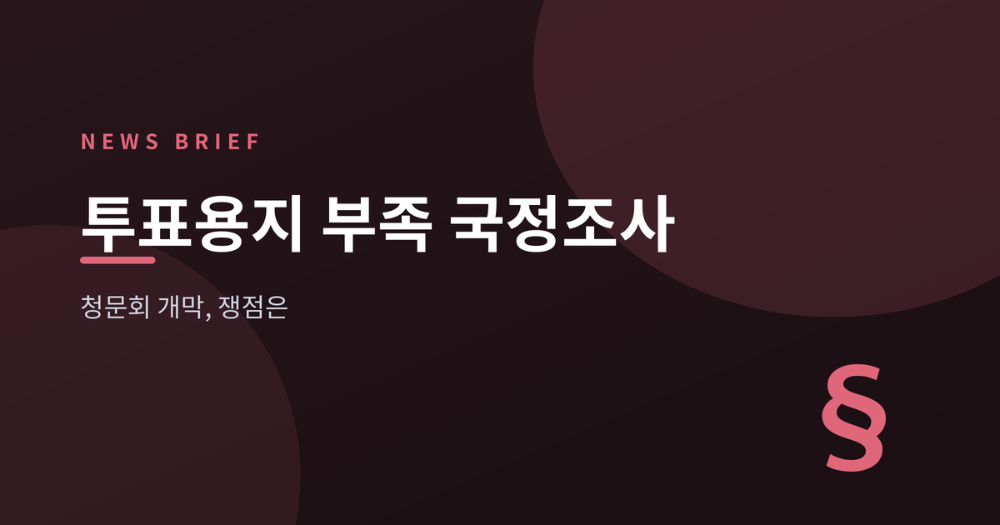
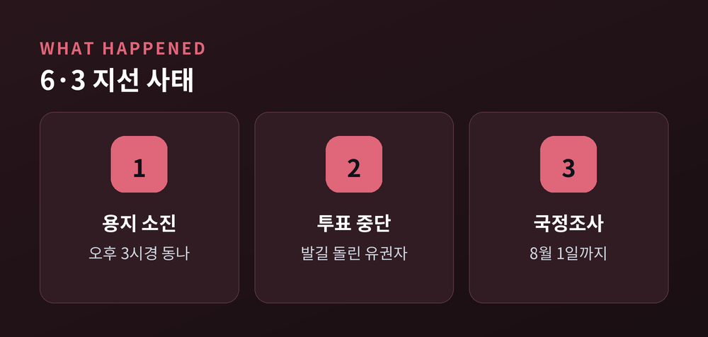
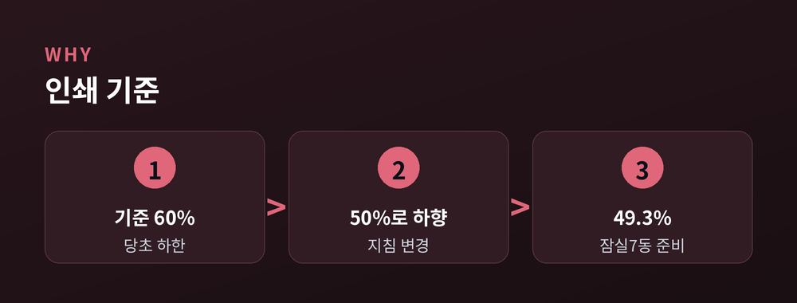
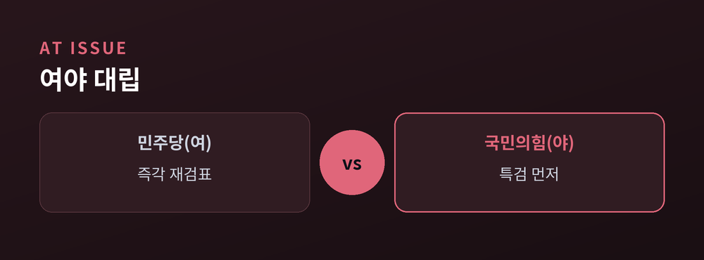
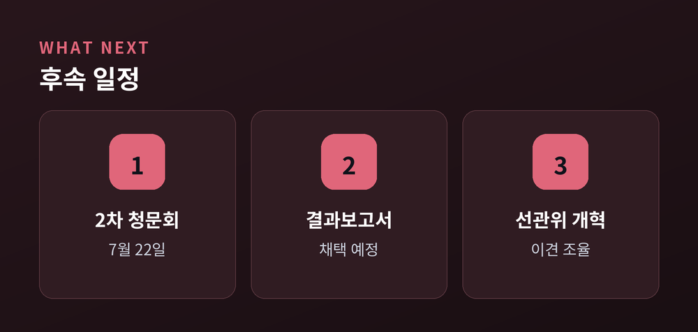

무엇이 쟁점인가
오늘 국회에서 6·3 지방선거 투표용지 부족 사태를 다루는 국정조사 첫 청문회가 열렸습니다.
초유의 사태가 왜 벌어졌고, 여야는 어디서 갈렸는지 차분히 정리해 보겠습니다.
어느 한쪽 편을 들기보다, 사실과 양측 주장을 나란히 놓는 데 무게를 두었습니다.

지난 6월 3일 제9회 전국동시지방선거 본투표에서 일이 벌어졌습니다.
여러 투표소에서 투표용지가 바닥났습니다.
서울 서초구 등에서는 오후 3시 무렵부터 용지가 동나기 시작했습니다.
투표가 한동안 멈췄고, 기다리다 발길을 돌린 유권자도 있었습니다.
유권자가 한 표를 행사하지 못한 초유의 상황입니다.
선거 사무의 근간인 투표용지가 모자랐다는 사실만으로도 파장은 컸습니다.
정부는 검·경 합동수사본부를 꾸렸고, 국회는 국정조사에 나섰습니다.
국정조사 계획서는 6월 18일 여야 합의로 본회의를 통과했습니다.
조사 기간은 8월 1일까지, 특위는 18명(민주 9·국힘 7·비교섭 2)으로 꾸려졌습니다.
위원장은 국민의힘 윤상현 의원이 맡았습니다.

핵심은 '얼마나 인쇄했느냐'입니다.
중앙선관위는 본투표 용지 인쇄 하한 기준을 선거인 수의 60%에서 50%로 낮추는 내부 지침을 뒀던 것으로 파악됐습니다.
그런데 봉쇄 사태가 난 잠실7동 제2투표소에는 그 50%에도 못 미치는 49.3%만 준비돼 있었습니다.
예산 쪽에서도 지적이 나왔습니다.
선거인 110%를 기준으로 약 145억 원을 편성한 뒤 인쇄 비율만 낮춘 결과, 63억 원가량이 남았습니다.
이 잔여 예산 일부가 세목 변경을 거쳐 약 40억 원 규모의 특별격려금으로 쓰인 정황이 청문회에서 도마에 올랐습니다.

이날 청문회에는 노태악 전 중앙선관위원장, 위철환 상임위원 등 90여 명이 출석했습니다.
쟁점은 크게 세 갈래로 갈렸습니다.
첫째는 재검표 시기입니다.
송파 올림픽공원에 보관된 247만 장을 두고, 여당인 민주당은 "즉각 공개 재검표"를, 야당인 국민의힘은 "특검을 먼저"를 주장했습니다.
둘째는 특검 추천권입니다.
필요성에는 양측이 공감했으나, 민주당은 제3자 추천을, 국민의힘은 야당 단독 추천권을 내세웠습니다.
셋째는 수의계약 의혹입니다.
최근 5년 선관위 계약의 상당수가 수의계약이었다는 분석이 나오며 '유착' 여부가 도마에 올랐습니다.
같은 사안을 놓고도 무엇을 먼저 밝힐지에서 여야의 셈법이 달랐던 셈입니다.

2차 청문회는 7월 22일로 예정돼 있고, 이후 결과보고서 채택이 남았습니다.
주목할 대목은 선관위 개혁입니다.
상임위원을 늘리자는 안과 위원 전원을 상임위원으로 두고 감사위를 붙이자는 안이 맞서 있습니다.
사전투표 개선, 투표지 100% 인쇄 같은 재발 방지책도 논의되고 있습니다.
방향의 큰 틀에는 공감대가 있지만, 각론은 아직 이견이 큽니다.

끝으로 한 가지만 덧붙이겠습니다.
이 사안의 중심에는 정파의 유불리가 아니라 한 표의 무게가 있습니다.
— "누구를 탓하느냐보다, 다음 선거에서 같은 일이 없게 하는 것."
청문회가 그 답에 얼마나 다가설지, 조금 더 지켜볼 일입니다.
참고 소스